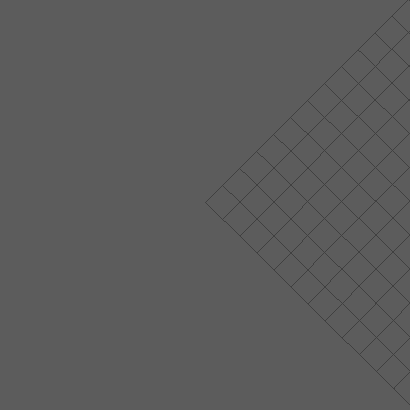

HTransparentDialogOnViewport¶
-
class
source.Qt.custom_widget.HTransparentDialogOnViewport(*args: Any, **kwargs: Any)¶ Create a Custom Qwidget that will follow the maya Viewport while allowing transparency/semiTransparency
Todo
Allow to minimize the window to different side (top left, top right, bottom left, bottom right)
- Parameters
object_name (str) – Name of the window that’ll be created
parent (HTransparentDialogOnViewport) – Parent the window to an other HTransparentDialogOnViewport,
optionalpos (list) – Position where the windows will appear base on the maya viewport,
defaults [0,0]size (list) – Default size of the created window ,
defaults [50,50]visible (bool) – If the windows should be visible when created or not,
defaults Falseorientation (str) – Define the layout orientation onf the window,
defaults horizontalopacity (float) – Define the opacity of the window,
defaults 0.5
Danger
parentneed to be a HTransparentDialogOnViewport for it to workorientationonly accept ‘horizontal’ or ‘vertical’opacityvalue should be contain between 0.0 and 1.0
Example:
import Qt.custom_widget as cstm_widget TOOL_ICON = QtGui.QIcon(":/images/my_tool_icon.png") class MyCustomUI(QtCore.QObject): def __init__(self): super(MyCustomUI, self).__init__() # ui creation self.main_ui = cstm_widget.HTransparentDialogOnViewport('anim sculpt', pos=[10, 10], size=[400, 30], tool_icon=TOOL_ICON, visible=True) self.my_button = QtWidgets.QPushButton('press me') # to add widget to the main ui use ``main_layout`` self.main_ui.main_layout.addWidget(self.my_button) # to run function when user quit ui use ``ui_leaved`` self.main_ui.ui_leaved.connect(my_leave_function) UI = MyCustomUI() UI.main_ui.show()
Functions
Create all connection of QWidget
Create the context menu
Create all layout of QWidget
Create all Widget of QWidget
Create eventfilter to install on maya UI to detect UI event
define the boundary of the viewport zones
Return widget position relative to the viewport
Maximize widget
Minimize widget or hide it if windows is child
What to do in case of mouse doubleclick event
What to do in case of mouse move event
What to do in case of mouse press event
What to do in case of mouse release event
HTransparentDialogOnViewport.move_widget_with_viewport(event)Bind widget position to viewport
Paint the semi transparent window
Assign a zone to the widget depending of it’s relative position to the viewport
delete the tool when quiting it and emit signal